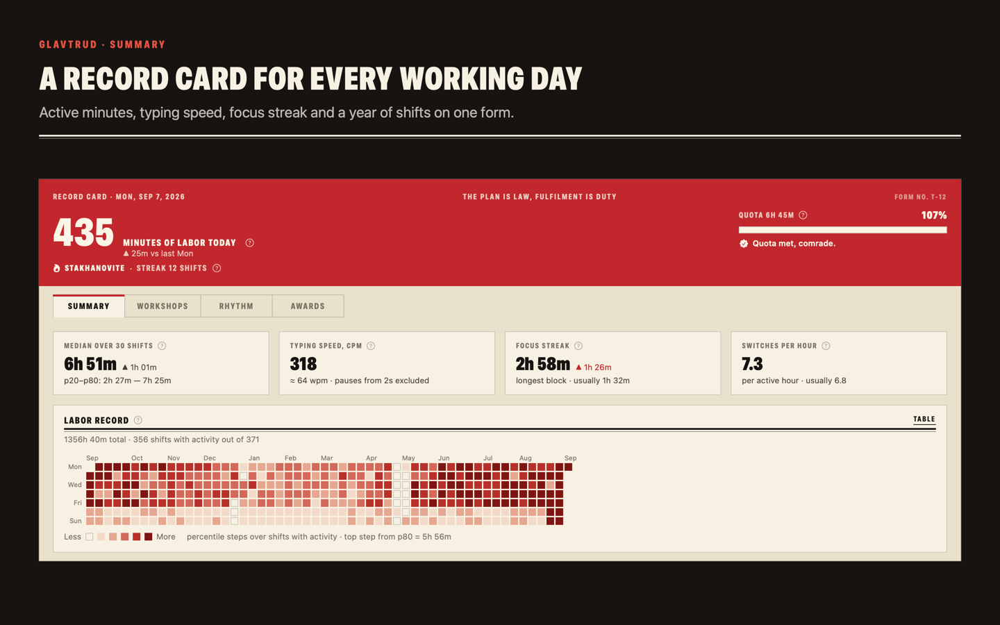

What it measures
- Active minutes — minutes in which you actually typed, clicked or scrolled, counted one by one.
- Typing speed — characters per minute inside typing bursts, with pauses of two seconds and longer excluded.
- Focus streak — the longest unbroken block of work in a shift.
- Workshops — how the shift split between core labor and auxiliary work, by application. You declare what counts as core.
- A quota you set by working — the median of your own last thirty shifts, rounded to a quarter of an hour.

Privacy, in concrete terms
- No permissions are requested. Not Accessibility, not Input Monitoring, not Screen Recording.
- Key codes are physically unavailable to the app: it reads aggregate system event counters, never event content, and contains no event tap.
- No network entitlement. No analytics, no accounts, no third-party SDKs.
- Everything is stored in one SQLite file inside the app's own container. Export it to CSV or erase it at any time.
What it is not
This app measures input load, not productivity. An hour of thinking about architecture produces a shortfall, and that is a correct shortfall. The quota is a frame for accounting, not a judgement of your work.
Help
Questions, bug reports and feature requests: open an issue. More on the support page.